.jpg)
DOBRICA BRDARIĆ
Trener prve ekipe
Vaterpolo klub PROLETER
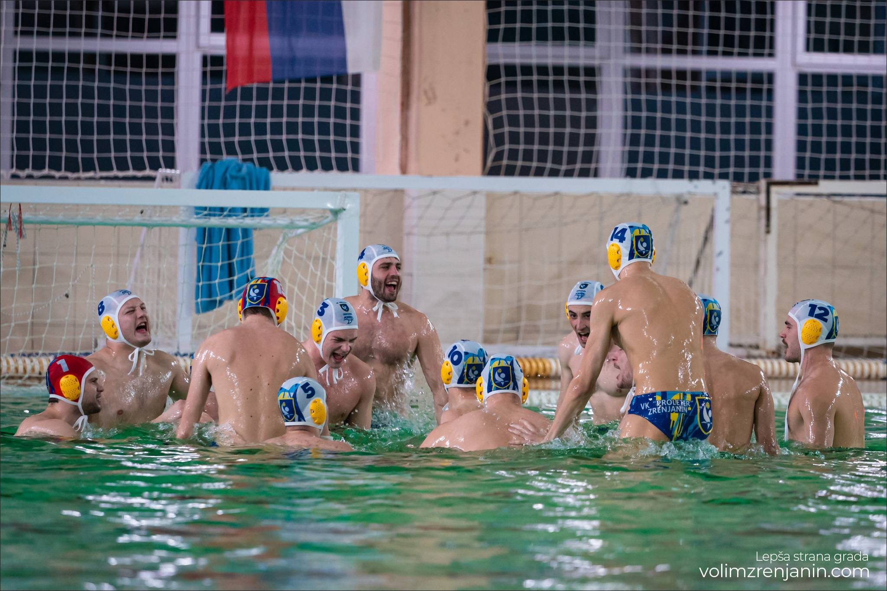Klub je osnovan dana 14.03.2000 u Zrenjaninu, rešenjem Ministarstva omladine i sporta br.661-205/200 i taj dan se obeležava kao praznik Kluba.
Klub je sledbenik Vaterpolo kluba „Proleter“ Zrenjanin i Vaterpolo kkluba „Zrenjanin“, kao dan kluba se utvrđuje 15.11.1946. godine jer su na taj dan započete vaterpolo aktivnosti u Zrenjaninu.
Klub je član Vaterpolo Saveza Srbije, kao nacionalnog granskog sportskog saveza, Vaterpolo Saveza Vojvodine i član Sportskog saveza grada Zrenjanina.
Klub se u obavljanju sportskih aktivnosti i sportskih delatnosti naročito angažuje na afirmaciji duha olimpizma, podsticanju fer pleja, unapređenju vaspitno-obrazovnog i stručnog rada u sportu, podsticanju i afirmaciji dobrovoljnog rada u sportu, borbi protiv lažiranja, suzbijanju nasilja i dopinga u sportu.
Svojim delovanjem doprinosi razvoju, afirmaciji i promociji vaterpola u Republici Srbiji i povećanju bavljenja vaterpola u svim segmentima stanovništva Srbije (omasovljenje vaterpolo sporta)
Uspomene našeg kluba
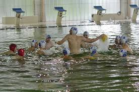 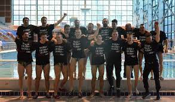 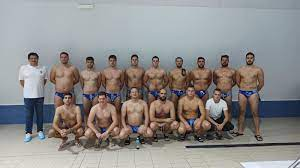 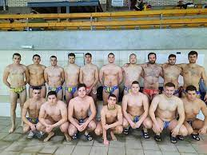 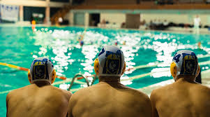 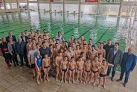 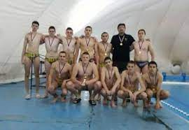 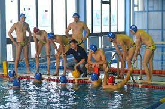 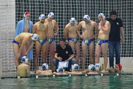 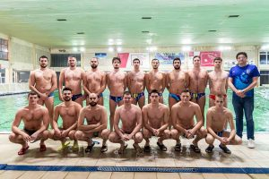
Trener prve ekipe
.jpg)
Pomoćni trener i trener u školi vaterpola i plivanja
.jpg)
Trener mlađih kategorija i kapiten prvog tima
.jpg)
Trener mlađih kategorija i igrač prvog tima
VK”Proleter” upisuje nove članove u školu plivanja i
vaterpola svakog radnog dana od 20h na gradskom bazenu.
Upisujemo dečake rođene 2009.godine i mlađe,kao i devojčice rođene 2006.godine i mlađe.
Info telefon 060 0514 250
Telefon: 060-0514250
E-mail: vkproleter@gmail.com
Facebook: VK Proleter
Instagram:vk_proleter_zrenjanin
Adresa: Jovana trajkovića 1, Зрењанин